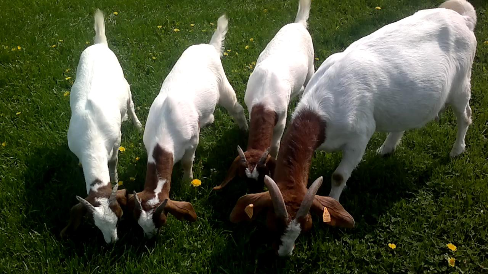
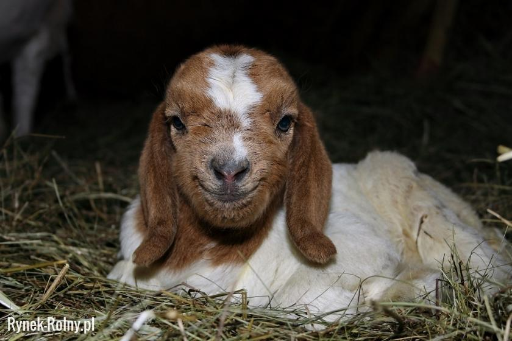

Kozy burskie są przedstawicielami ras należących do typu użytkowego mięsnego. Kozy mięsne w większości mają afrykańskie korzenie. Zostały sprowadzone do Polski z Namibii oraz południowej Afryki. W Polsce znajduje się kilka hodowli kóz burskich, a od 2006 roku są prowadzone księgi hodowlane dla tej rasy.
Kozy ważą około 70 kg, a kozły 110 kg. Mają zbitą budowę ciała i masywny tułów. Cechą charakterystyczną dla kóz mięsnych jest kształt kłody, który można wpisać w prostokąt. Mięśnie udźca i zadu są wyraźnie zarysowane i zaokrąglone. Grzbiet jest zupełnie prosty i bardzo szeroki. Klatka piersiowa cechuje się dużą pojemnością i głębokością. Nogi w porównaniu do ras mlecznych są krótsze i grubsze oraz szeroko rozstawione. Pęciny mają większy obwód, a racice są zbudowane z mocnego, odpornego na uszkodzenia mechaniczne tworzywa. Głowa w stosunku do reszty ciała jest dość duża, u obu płci występują długie rogi. Uszy są szerokie, dość duże, leżące wzdłuż szyi. Profil twarzowy jest silnie zaokrąglony na całej długości kości nosowej. Wymię kóz jest małe, najczęściej białe i owłosione.
Kozy burskie posiadają bardzo charakterystyczne ubarwienie. Głowa, szyja oraz pierś są rude, a reszta ciała biała. Bardzo często pomiędzy oczami występuje biała plama, dzieląca głowę na dwie części, tworząc maskę. Barwne umaszczenie może występować w kilku odcieniach od beżu, do ciemnej czerwieni, nawet wpadającej w brąz. Zdarza się pojawienie w stadzie osobnika o całkowicie barwnym umaszczeniu. Sierść jest krótka, błyszcząca, broda kozłów imponuje swoją gęstością i długością. link
"Szczęściem ludzie w to się wdali,
Milicjanci ją złapali,
Uwiązali na powrozie
I zamknęli kozę w kozie." - Jan Brzechwa "Koza"
| zdjęcia kóz | |
|---|---|
|  |  |
| |
|
| kilka kóz | jedna koza |